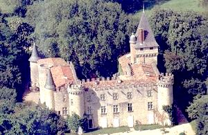
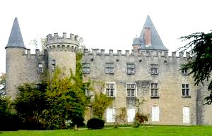
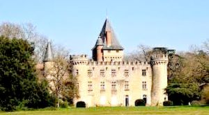
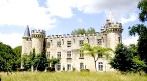

Recensement Jean-Claude Truffet
| Département | 81 — Tarn |
| Canton | Castres |
| Commune | Navès |
| Type d'édifice | Forteresse |
| Période d'origine | XII-XVI |




MONTESPIEU, au XIIe siècle la seigneurie appartenait à l'origine aux chevaliers de Caudière, attestés dès le début du XIIIe siècle puis, à la fin du siècle suivant passa à la famille Huc. L'on sait par la suite qu'aux alentours de 1508, le château primitif, mal localisé par les documents et distant du château actuel d'à peu près une lieue était en ruines. Le château actuel fut construit aux alentours de 1510 par Pierre III d'Huc et ses fils agrandirent le domaine, puis la seigneurie passa par alliance au Padiès seigneur de saint-Martin , puis à Jean de la Barre qui hérite du domaine. A la mort de Jean de Padiès en 1570 le légue à son cousin Jean de Nadal seigneur de Lacrouzette Le 23 janvier 1590, Marguerite de Sales, la veuve de Jean de Nadal, dont le vicomte et le baron de Montfa avaient épousé deux filles, Renée et Anne, fut prise dans un traquenard et assassinée à trois lieues de Montespieu avec une de ses filles et une servante par un de ses serviteurs. Le 19 juillet 1591, il se produisit une échauffourée entre le vicomte et le baron de Montfa et les habitants de Labruguière qui soupçonnaient les Toulouse-Lautrec de faire partie de la Ligne. Montmorency fit emprisonner les deux seigneurs un court moment mais il les libéra bientôt et le vicomte se retira à Montespieu. Dans ce contexte trouble de guerre, les incidents de ce type étaient monnaie courante. En janvier de l'année suivante, un soldat de Labruguière ayant été maltraité par le vicomte de Montfa, obtint un ordre de Montmorency, prit une petite troupe et alla prendre d'assaut le château de Montespieu. Cependant, le vicomte put lui échapper. Enfin, en cette même année 1592, Montespieu fut à nouveau pillé et incendié.Le 23 mai 1600, Montespieu fut acquis par Abel de Suc, président réformé de la chambre de l'édit de Castres, passera aux Scorbiac et en 1680 achat par Antoine de Juge , cette famille protestante le conserva ainsi que le domaine jusqu'en 1964 date de la mort d'Henriette de Juge de Montespieu. Il est actuellement utilisé pour l'organisation de mariages et d'événements divers.
Le château de Montespieu est une forteresse néo-médiévale situé à Navès. Construit sur des bases remontant au XIIe siècle, il fut entièrement reconstruit au XVIe siècle, remanié au XVIIe siècle puis restauré en 1900. Le château de Montespieu est un vaste rectangle qui présente les caractéristiques d'une forteresse néo-médiévale, s'ordonne autour d'une grande cour intérieure de forme rectangulaire bordés sur trois de ses côtés par des corps de bâtiments, fermée au nord par un mur de clôture dans lequel s'ouvre une poterne crénelées, entouré de fossés aujourd'hui comblés, il est flanqué de sept tours, trois au corps de logis principal et quatre aux pavillons d'angles du quadrilatère. Flanquant l'aile Est, une de ces tours dont la haute toiture pyramidale dépasse la hauteur des bâtiments. A l'ouest deux tours rondes sont percées de bouche à feu. Conserve une allure défensive mais la cour inférieure présente un aspect plus convivial, avec de grandes fenêtres à meneaux qui éclairent la façade. Par la suite, un acte en date du 17 septembre 1664 indique les réparations à effectuer au château ainsi qu'une description détaillée de la bâtisse : les fossés sont indiqués, ainsi que le pigeonnier et l'entrée est signalée au levant. La Révolution entraîna à Montespieu quelques dommages puisque les créneaux furent arasés, Paul de Juge entreprit de restaurer le château à la fin du siècle dernier.
Famille d'Antoine de Juge de Montespieu
"
Forteresse de Montespieu à Navès